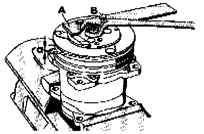
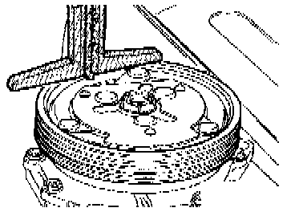
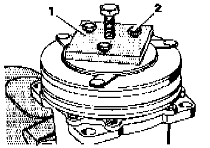
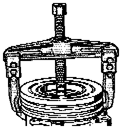
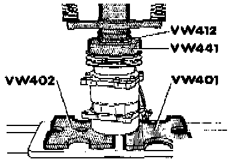
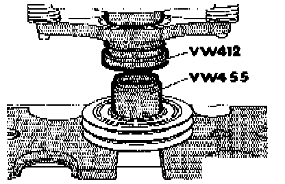
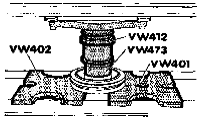

Compressor Clutch: Service and Repair
NOTE:- The A/C compressor shown in images (Sanden model SD7 -H15-) is not applicable for all Golf, GTI, Jetta and Cabrio vehicles.
- For clutch component identification, Exploded Views
Removing And Installing Clutch Plate Nut, And Adjusting Gap Between Clutch Plate And Belt Pulley:

- Hold clutch plate using spanner wrench -A- and remove clutch plate nut.
A - Mastercool tool No. 90901 or equivalent
B - Hex head bolt, 1/4 in. (for tool)
To adjust gap between clutch plate and belt pulley:
- Hold clutch plate and tighten clutch plate nut (self-locking) until gap -a- 0.7 mm (0.028 in. or approx. 1/32 in.).
Measuring Gap Between Clutch Plate And Belt Pulley:

- Measure distance between clutch plate and belt pulley as shown.
- Using a fused 12 Volt power supply, connect 12 V (power (B+) and Ground (GND)) to A/C clutch connector.
- With clutch engaged, measure distance between clutch plate and belt pulley once again.
- Difference between first and second measurement is gap.
- Must be 0.7 mm (0.028 in. or approx. 1/32 in.)
- If necessary. adjust gap See Fig. 1
Removing Clutch Plate:

- Remove front clutch plate using clutch plate puller-1- (Mastercool tool No. 90902 or equivalent similar tool shown and 1/4 in. bolts -2-.
Removing Belt Pulley:

- Using puller 20/10 or equivalent, remove belt pulley.
Installing Belt Pulley:

- Using VW 401 and VW 402 thrust plates and VW 412 and VW 441 thrust bushings, press belt pulley onto shaft.
Removing Bearing Assembly:

- Using VW 401 and VW 402 thrust plates, VW 412 thrust bushing and VW 455 thrust tube, press bearing from pulley.
Installing Bearing Assembly:

- Using VW 401 and VW 402 thrust plates and VW 412 and VW 473 thrust bushings, press bearing onto pulley until fully seated.